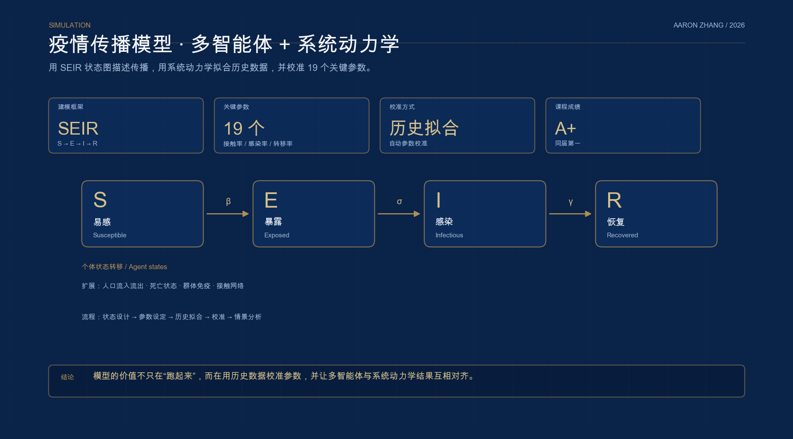

疫情传播模型拟合 · 多智能体 + 系统动力学
用 AnyLogic 搭建 SEIR 多智能体模型，并用系统动力学拟合历史数据、校准 19 个关键参数。
| 项目 |
课程项目 · 团队负责人 |
| 时间 |
2025.07 – 2025.08 |
| 角色 |
建模设计 / Java 实现 / 参数校准 / 结果分析 |
| 关键词 |
AnyLogic SEIR 多智能体 系统动力学 Java |
背景 / Context
后疫情背景下，如何用一个可解释的模型描述疾病传播过程，并为防控策略提供参考？
项目选择「多智能体 + 系统动力学」的组合：多智能体模拟个体状态和接触网络，系统动力学拟合总体传播趋势，两者互相校准。
我的工作 / What I did
- 基于 SEIR 状态图，用 AnyLogic 构建多智能体模型，模拟易感、暴露、感染、恢复四种个体状态。
- 通过动画和图表实时可视化传播动态。
- 设计并调整 19 个关键参数，包括接触率、感染率、人口转移率等。
- 用 Java 实现感染逻辑；用系统动力学模型拟合历史数据，并通过自动校准优化参数，使多智能体结果与系统动力学结果对齐。
- 扩展模型：加入人口流入/流出、死亡状态和群体免疫机制。
- 负责团队分工、模型整合和最终汇报。
结果 / Impact
- 完成可运行的多智能体 + 系统动力学耦合模型。
- 课程项目获 A+，在同届中排名第一。
- 形成一套可复用的建模流程：状态设计 → 参数设定 → 历史拟合 → 校准 → 情景分析。
关键数据 / Key Numbers
| 指标 |
数值 |
口径 |
| 建模框架 |
SEIR 多智能体 + 系统动力学 |
S → E → I → R |
| 关键参数 |
19 个 |
接触率、感染率、转移率等 |
| 校准方式 |
历史数据拟合 |
自动参数校准 |
| 课程成绩 |
A+ / 同届第一 |
课程项目 |

图：S/E/I/R 状态转移与多智能体建模结构；参数通过历史数据拟合校准。
结论 / Takeaways
- 模型不是“跑起来”就结束：要用历史数据校准参数，并检查多智能体与系统动力学结果是否对齐。
- 状态、参数、反馈回路是建模的三件事：先定义状态，再设定参数，最后看个体行为与总体传播的反馈。
- 案例不伪造拟合曲线：本页只展示模型结构和参数口径；具体拟合优度以课程模型文件为准。
可迁移的能力 / What it shows
- 建模思维：把现实问题抽象成状态、参数和反馈回路。
- 参数校准：模型不是「跑起来」就结束，还要用历史数据检验和调整。
- 系统视角：个体行为与总体传播之间的反馈关系。
说明：该项目为课程项目，模型文件可在面试中展示；案例页不包含完整模型文件和原始数据。